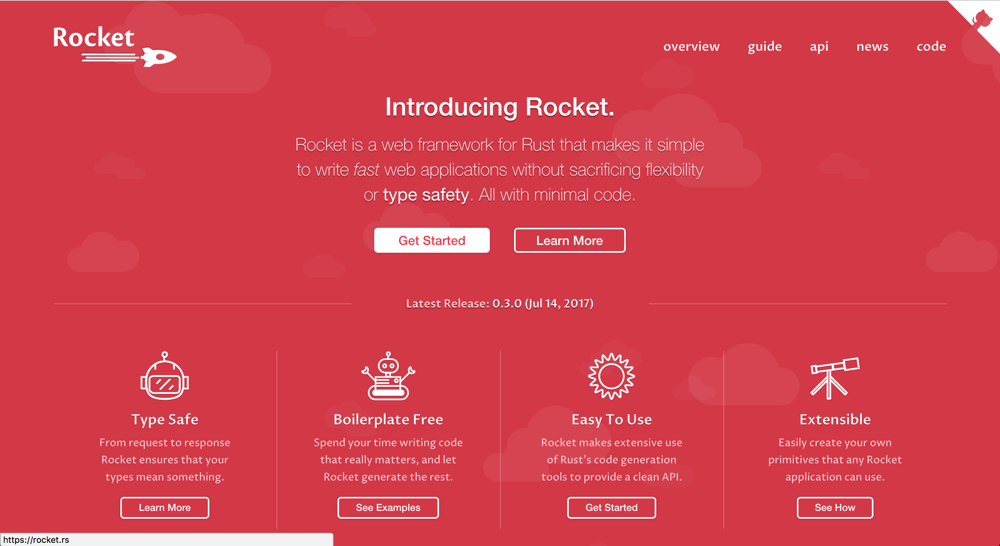

(Nunca) Ouvi falar de Rust…
Mas como eu faço um site?
Olá pessoal!
Se você nunca ouviu falar de Rust…
Vou contar o que é Rust
Vou contar como eu conheci Rust
E alguns problemas que a linguagem me ajudou a resolver
Mas se você já ouviu falar…
Vou mostrar alguns passos pra seguir aprendendo
Em 2015
Comecei a me envolver com o deploy das aplicações do meu projeto
NPM + Python + Java + Closure Compiler + SCons + RVM…
Eu queria uma maneira simples de executar aplicações
Objetivo
1 arquivo binário e cross-plataforma
As opções
"Pra escrever binário tem que ser C?"
Rust foi uma das opções na minha busca por alternativas
"Mas o que é Rust?"
Rust
Rust é uma linguagem de programação de sistemas que roda incrivelmente rápido, previne falhas de segmentação, e garante segurança entre threads.
O que me chamou atenção para seguir aprendendo:
- Imutável por padrão
- Não tem null ou undefined
- Gera binários
- Cross-plataforma
- Ideal para programar em baixo nível
- Linguagem com investimento da Mozilla
"Deveria me preocupar por ser baixo nível?"
Quantos falhas podem acontecer em um programa de baixo nível?
BufferOverflow, Segmentation Fault, Use After Free…
Rust tem um sistema de tipos que previne diversos erros de gerenciamento de memória, em tempo de compilação
Gerenciamento de memória sem Garbage Collector
TODO Exemplo de coisas que Rust previne apenas com o compilador
Agora eu consigo fazer isso:
E no final da apresentação você também
Quem já ouviu falar de Rust?
Ah, e esse é o mascote, Ferris

(E dá pra costurar um pra você)
Agora, como faço um site?
Primeiro passo: Instalando as ferramentas
Siga as instruções no site do Rustup

Esse é o gerenciador de versões do Rust
- Vai instalar todas as ferramentas
- Suporta Linux, Mac e Windows
- Ajuda a manter tudo atualizado
Teremos instalado no final:
- rustup: o gerenciador de versões
- cargo: o gerenciador de projetos e de dependências
- rustc: o compilador
- rustdoc: o gerador de documentação
- rust-gdb e rust-lldb: debuggers
Criando nosso projeto
$ cargo new --bin meu-site-em-rust
$ cargo run Compiling meu-site-em-rust v0.1.0 Finished dev [unoptimized + debuginfo] target(s) in 1.54 secs Running `target/debug/meu-site-em-rust` Hello, world!
Vamos criar uma primeira página
Vamos criar um arquivo em src/index.html com seguinte conteúdo
<!doctype html> <html> <head> <meta charset=utf-8> <title>Olá TDC SP 2017</title> </head> <body> <h1>Olá mundo</h1> <marquee>Olá TDC</marquee> </body> </html>
Adicionando um framework web
Vamos usar o framework Nickel para nos ajudar

Adicione a dependencia no arquivo Cargo.toml
[dependencies] nickel = "0.10.0"
Alterando nosso arquivo
Agora vamos ver um pouco de Rust, aos poucos.
Vamos abrir o arquivo src/main.rs.
Primeiro, importamos e incluimos algumas referências do framework web.
#[macro_use] extern crate nickel; use nickel::{Nickel, HttpRouter};
Incluímos todo o conteúdo do nosso arquivo HTML em uma constante.
const INDEX: &str = include_str!("index.html");
Criamos um novo servidor Nickel.
let mut server = Nickel::new(); server.get("/", middleware!(INDEX));
Configuramos a porta a partir da variável de ambiente PORT.
Vamos usar a porta 3000 de fallback.
let port = std::env::var("PORT").unwrap_or("3000".into()); let url = format!("0.0.0.0:{port}", port = port);
Iniciamos o nosso servidor, com uma mensagem caso haja erros.
println!("On {}", url); server.listen(url) .expect("Não conseguimos iniciar o servidor");
No final teremos isso:
#[macro_use] extern crate nickel; use nickel::{Nickel, HttpRouter}; const INDEX: &str = include_str!("index.html"); fn main() { let mut server = Nickel::new(); server.get("/", middleware!(INDEX)); let port = std::env::var("PORT").unwrap_or("3000".into()); let url = format!("0.0.0.0:{port}", port = port); println!("On {}", url); server.listen(url) .expect("Não conseguimos iniciar o servidor"); }
Agora podemos criar o nosso executável
$ cargo build --release
E executar:
$ ./target/release/meu-site-em-rust
On 0.0.0.0:3000
Listening on http://0.0.0.0:3000
Ctrl-C to shutdown server
TA-DA!

Parabéns!
Você tem um site em Rust.

E tudo em um só binário!
E tem demo no Heroku!
"Mas dá pra fazer mais alguma coisa?"
Fazendo uma chamada web
É tão fácil como outras linguagens, mesmo sendo uma linguagem de sistemas
Vou seguir a receita disponível no Rust Cookbooks
"Uma pergunta…"
É fácil aprender Rust?
Eu passei semanas batendo a cabeça em conceitos que eram novos para mim.
- Tenho um background mais alto nível (Ruby/Java/JavaScript)
- Tive que aprender sobre stack e referências
- O conceito de
lifetimeeborrowdemoraram pra entrar na minha cabeça
Rust trouxe novos conceitos para minha caixa de ferramentas.
E eu tenho me divertido muito!
A comunidade é muito aberta e me ajudou bastante.
Muitas pessoas estão disponíveis para ajudar no #rust-beginners, no fórum e até no #rust-br.
Como eu coloco meu site no Heroku?
Eu usei esse buildpack.

Só existe o Nickel para web?
Já existem vários frameworks, mas ainda é um ecosistema em desenvolvimento.
Uma boa lista está disponível no site Are We Web Yet?

Se você estiver buscando algo mais experimental:
Confira o Rocket, que usa uma sintax mais sucinta…
Mas depende de funcionalidades do compilador ainda em desenvolvimento.
Preciso usar rustup?
É o método mais recomendado pela comunidade
- É a maneira mais fácil de manter tudo atualizado
- Rust tem uma versão nova a cada 6 semanas
- Fica mais fácil de acompanhar as novas funcionalidades
Rust está disponível nos gerenciadores de pacotes dos sistemas operacionais também, mas pode demorar um pouco mais para receber atualizações.
Como conecto em um banco?
O Diesel pode ajudar nisso.

Já existem empresas usando Rust?
Sim. Inclusive o Firefox do seu computador já tem partes em Rust.
Algumas empresas: Dropbox, Chef, Tilde, Sentry, CoreOS, Mozilla e tem mais na lista do site.
Só dá pra usar Rust para a web?
Não, dá pra usar para muitas outras lugares!
(Se eu fosse falar todos os exemplos, seria uma outra apresentação inteira)
Dois fortes* espaços para aplicar a linguagem:
- Ferramentas de suporte (CLIs, build, processadores de texto, etc)
Extensões de linguagens (Gems, npm, python extensions, FFI)
*IMHO
Machine Learning, Ruby, Python, Haskell, Node.js, WebAssembly, Container, Network Platform, Embedded…
Espero que tenham gostado de Rust
Bruno Tavares - @bltavares
Links
- https://github.com/bltavares/meu-site-em-rust
- Imagens do Ferris
- http://edunham.net/2016/04/11/plushie_rustacean_pattern.html
- https://rustup.rs/
- https://github.com/nickel-org/nickel.rs
- https://ouvi-falar-de-rust.herokuapp.com/
- https://riot.im/app/#/room/#mozilla_#rust-beginners:matrix.org
- https://users.rust-lang.org/
- https://riot.im/app/#/room/#mozilla_#rust-br:matrix.org
- https://github.com/emk/heroku-buildpack-rust
- http://www.arewewebyet.org/
- https://rocket.rs/
- https://diesel.rs/
- https://www.rust-lang.org/en-US/friends.html
- http://www.arewelearningyet.com/
- https://usehelix.com/
- https://github.com/mitsuhiko/snaek
- https://github.com/mgattozzi/curryrs
- https://www.neon-bindings.com/
- https://hackernoon.com/compiling-rust-to-webassembly-guide-411066a69fde
- https://blogs.oracle.com/developers/building-a-container-runtime-in-rust
- https://tokio.rs/
- https://github.com/rust-embedded